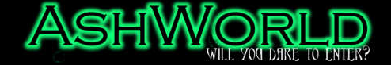
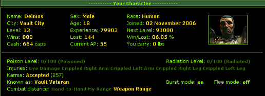
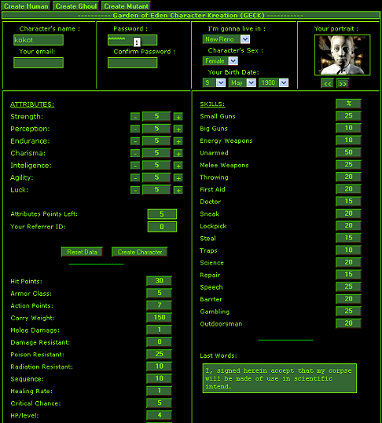
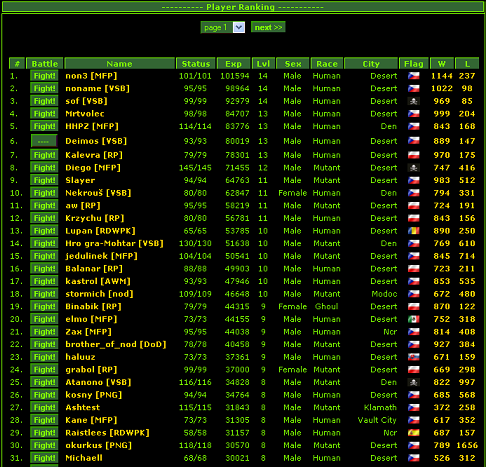
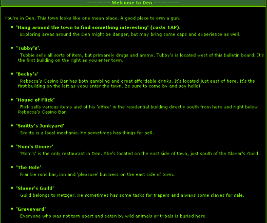
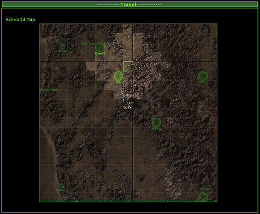

AshWorld - vyvíjející se Falloutí zázrak

Tajemný osud budoucnosti lidstva je zpečetěn; jen ti nejsilnější dokáží přežít v postapokalyptickém světě plném nástrah a nebezpečí. Dokážete to i vy? Zkuste to v AshWorldu a uvidíte sami…
Aby příznivci kultovní hry Fallout nemuseli tak znuděně čekat na další pokračování této série, vrhli se polští fanoušci do internetového zpracování s námětem právě této hry. Pře necelým rokem Vás tento server již několika málo články o podrobnostech této webovky informoval, čas však pokročil a tak si tato vyvíjející se návyková hra zaslouží další upozornění. Nyní se vším všudy.
Osobně jsem fenoménu známém pod jménem AshWorld podlehl krátce poté, co se již jeden z nejúspěšnějších českých hráčů, JaW, začal od časožroutové závislosti na AW distancovat. Společně s tím však zanikl i proud informací o této webovce a to v době, kdy hra začala neuvěřitelně expandovat. Skoro již rok jsem však i já její součástí a tak si Vás dovoluji obeznámit a informovat o nových upgradech a změnách… Vždyť každý nový turnaj (nový věk) přináší něco nového. Začněme ale od začátku: Jak tedy AshWorld ve skutečnosti vypadá? Pojďme na to společně!
Vše podstatné začíná na této stránce. Po spuštění vás přivítá zelenočerné prostředí, tak typické pro Fallout. Abychom vůbec mohli začít hrát, je důležité vytvořit si postavu. Její tvorba je téměř totožná jako již ve zmiňovaném Falloutu, na výběr však máme ze tří ras: člověk, ghoul a mutant. Každá entita má samozřejmě své plusy i minusy, ale jen zkušený plejer jej dokáže vyšperkovat tak, aby způsoboval zkázu všem protihráčům. Všeobecně ale zatím platí, že ghoul je nejslabší, kdežto mutanti a lidé se na vrcholu žebříčku střídají. Zajímavé lákadlo do budoucna je možná to, že autoři snad opět zprovozní a zpřístupní párače.
S popisem hry jste se již mohli setkat v našich starších článcích (tady a tady).
Je toho však stále více a více, čím by vás hra mohla zaujmout. Neustálé vylepšování, jež se většinou řídí i žádostmi samotných hráčů, neustále zvyšuje hladinu očekávání na další nové turnaje, neboť s nimi přichází nové a nové možnosti: v neposlední řadě to jsou nová města s novými čtvrťmi, nové obchody s často obměňovaným arzenálem nových a stále silnějších a zajímavějších zbraní či nejodolnějších brnění, ale i nové questy, za jejichž vyřešení můžete získat nějaký ten peníz či jinou odměnu.
Starší, zato stále aktuální téma je vlastnictví AUTA: ano, pokud jste ochotni obětovat několik, pro mnohé i desítek, AP, dopracujete se až k získání deseti součástek, za které si pak můžete nechat složit auto. A výhoda? Cestování po mapě zcela bez ztráty jediného AP. Radno dodat, že elita hráčů v první dvacítce prostě bez auta existovat nemůže.
Zajímavou a stále rozmáhající se součástí našeho života v AW je i tvorba GANGŮ. Již „legendární“ a klasický je souboj polského gangu MFP a českého VSB, převážně fanoušků stránek Vaultu Šílené Brahmíny. Gangy nejsou ve hře již ničím neobvyklým: seskupení hráčů nejenže podle statistik výher/proher mezi jednotlivými gangy dostává od města (zatím jen jednoho- Den) výpalné, ale může si se mezi sebou vyměňovat součástky do aut, rozdělovat peníze či je naopak vybírat, aby měl postupně každý člen tu nejlepší výbavu, a také se při hře on-line domlouvat na strategii pomocí chatu, do něhož můžou nahlédnout jen samotní členové.
Podvádět se ve hře také moc nevyplatí, neboť, nevím jak u jiných webovek, ale autoři mají vše podchyceno a pokud zjistí, že využíváte nějakou chybu hry či dokonce máte vytvořeno několik Charakterů, tak okamžitě končíte a vaše přezdívky se vzápětí ocitají na tabulce cheaterů.
Závratně velké změny či vylepšení každým turnajem neočekávejte: jak už bylo řečeno, úpravy jsou většinou diktovány samotnými hráči, ale zcela nové lokace, obchody nebo dokonce nové funkce jsou jen třešničky na dortu nových turnajů. Za zmínky tedy možná ještě stojí tabulka Changes, která stručně a přehledně vypisuje změny a novinky, přicházející s novým turnajem. Zde je příklad posledního updatu:
- 1 nové město se čtyřmi ulicemi a několikapatrovými budovami
- 9 nových možností v rozhovorech, obsahující nové questy (úkoly) s možností objevení tajných prostor
- 10 nových obchodů s množstvím nových položek
- Messages boardy pro hráče
- a další menší změny…
Jakkoliv se hra jeví primitivně a nezáživně, věřte mi, že je o co stát. Velké množství hráčů statečně a úspěšně bojuje a přežívá již přes rok a nemalou oblíbenost dokládá i počet jedinců: momentálně je jich něco málo nad 300, vzpomínám si ale i na turnaj, kdy počet hráčů dosahoval čísla 700. Jakožto jsem se vás pokusil seznámit se vším, co by nového hráče mohlo zajímat, doufám, že jsem vás alespoň trochu navnadil… Ale co, zkuste a uvidíte, určitě tím nic neztratíte. So, will you dare to enter?
Deimos, Ještěřák

Deimosek poprvé...

...podruhé...

Go VŠB, go...

Den na Polský způsob

Co to asi bude..?